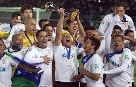

MARIA
Corinthias é o pior time do mundo em 2012?
Na semana passada, o Corinthians completou 112 anos e as redes sociais explodiram debatendo qual o principal título da história do clube: o Campeonato Paulista de 1977 ou a Libertadores de 2012? As duas conquistas representam o fim do "sofrimento" tão apregoado pelo corintiano. Em 1977, a torcida cresceu mesmo com duros 22 anos sem títulos. Em 2012, a catarse representou o alívio de enfim conquistar a América, algo que seus concorrentes diretos em São Paulo já haviam feito.
